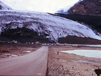
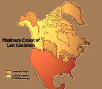
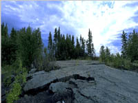
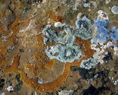

|
|
Soil Profile |
|
|
| Soils were considered as a natural body by Russian and US scientists
in the late 1800s. This allowed scientists to study and classify soils with the
objective of trying to understand soil formation from an environmental perspective.
They recognized that soils were formed by weathering of surface deposits or "parent materials" by
processes that were
The concept of soil forming factors allows scientists to understand and classify soils more clearly. |
|||
 Parent Materials Soils are formed by weathering of "parent materials". These materials have many origins such as bedrock surfaces, aolian (wind blown), lacustrine (from glacial lake beds), alluvium (river) and organic (peat) deposits. many of our soils have been developing since the last ice age.
| |||
 The most important parent materials in Saskatchewan come from glaciers which retreated from the prairies about 10,000 years ago. The glaciers, often several thousand feet high, had the power to move rocks and debris from the north carrying them hundreds of miles and depositing them all over the province as the ice melted. This material is often called "Glacial Drift or Till" and is several to hundreds of feet deep. Soils that form on till are usually clayey and quite stony and give rise to a rolling type landscape. The Glaciers often dammed river valleys creating huge glacial lakes (Saskatoon is situated on an old lake bed) which accumulated fine silt and clay material. Soils that form on lacustrine deposits are often quite silty and are stone-free, giving rise to a flatter landscape.
| |||
 The conversion of large rock matter into small (mineral) particles is mainly the result of physical weathering. Glacial erosion, wind, water and are the major physical forces involved in this type of weathering. While erosion can be witnessed day to day, like the movement of water over surfaces or a blowing wind that picks-up and deposits particles, the formation of Saskatchewan soils by this type of weathering took many, many years. The action of freezing water (and expanding in rock cracks or fissures), gravity movements (earthquakes and landslides), the burrowing actions by organisms or the movement animals across the land, are also physical forces.
| |||
Processes which break down rock matter to produce smaller, chemically different substances are included in this category. Oxidation, carbonation and hydration are major chemical actions which break-down and change rocks from one form to another. Examples of chemical weathering include
| |||
 Biological action begins the process of weathering at the very early stages as lichens and mosses desperately cling to the barren surfaces of rocks. They open up fissures and scrounge nutrients where they can, producing acids and chelating agents in an attempt to dissolve nutrients from the hostile environment. As the soil develops further the microfauna and microflora play their part in the development of humus. Billions of tiny plants and animals live, reproduce, grow and die in the soil, constantly adding organic matter to its composition. The soil is a habitat for living things that carry out the biological actions. Without these living things, soil would not be soil as we know it. Take a magnifying glass and a scoop of soil. Look closely, and you might see the soil 'crawling' with life. These living organisms in the soil provide
All of the organisms that live in the soil have a place in the soil ecosystem. The next time you decide to step on an ant or dig up that earthworm, consider how these animals benefit the soil society.
|